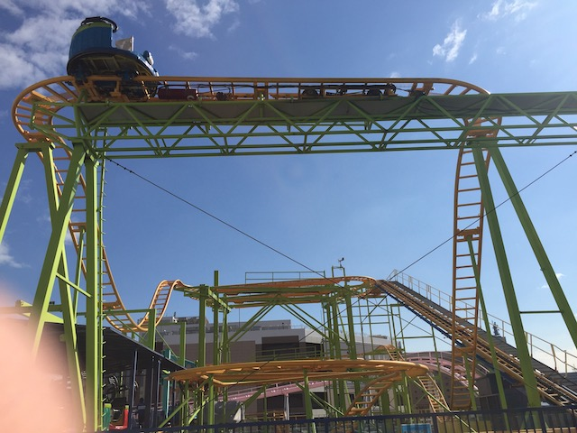
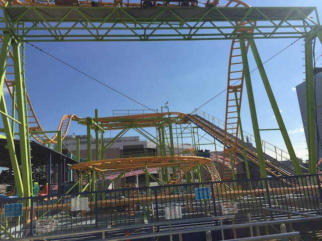
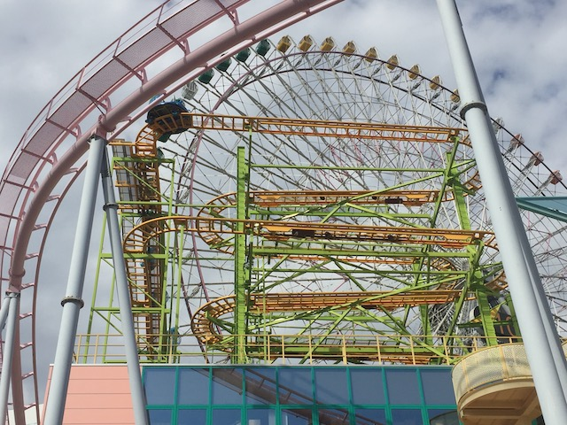
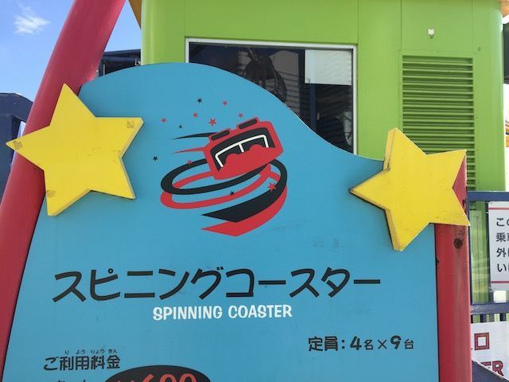

| |
Spinning Coaster Review

All right. We're here at Yokohama Cosmoworld, where we're going to review Spinning Coaster. The park's spinning mouse (I know. Very original name). Now I know from other enthusiasts, they claimed that this was one of the better spinning mice and this one spun like crazy. I WISH that was the case. Unfortunately, this one really didn't spin that much. Mainly since....the ride didn't spin until about halfway through the 2nd half. So only 1/4 of the ride spins. Anyways, we get into our cars and away we go. We roll through a turn and then head up the lifthill. You head off the lifthill and into a turn. And of course, as we're rolling through the upper set of switch backs, theres no spinning. Typical. Usually these things don't spin until the second half. After the switchbacks, you head into a small drop and back up the small hill. This is fun. We then head into the biggest drop of the ride. We gain some speed as we dip to the ground. We then head into some double up thing which sadly, but not suprisingly, has no airtime. We then jolt around another turn and head into the second set of switchbacks. Normally, we start spinning here. But NOPE!!! Just going through the normal switchbacks. Uh...did Reverchon f*ck up with this ride? Cause it should be spinning by now. Maintenence better come take another look at it. Eventually, after halfway through the 2nd half of the switchbacks, the ride starts spinning. So this Spinning Coaster doesn't spin for the first 3/4 of the ride. Well, the one upside of this, at least the spinning when it eventually starts spinning, is OK. Would be fine if this started where it should normally start, but because of the late start, I'm too jaded to care. We then go through the final little dip and bump. Yeah, at least we're spinning here. After that, we rise up and turn into the final brakes. While I have been on worse spinning mice, this is definetly down there. I certainly hope the reports of it running great in the 2000s were true, cause if so, then this ride can be saved. But for now, only ride it for the credit.
5/10
Location: Yokohama Cosmoworld
Opened: 1998
Built by: Reverchon
Last Ridden: November 14, 2018
I have ridden this exact same ride at the following parks.
Farup Sommerland
Walt Disney World Resort
Spinning Coaster Photos



Home
|